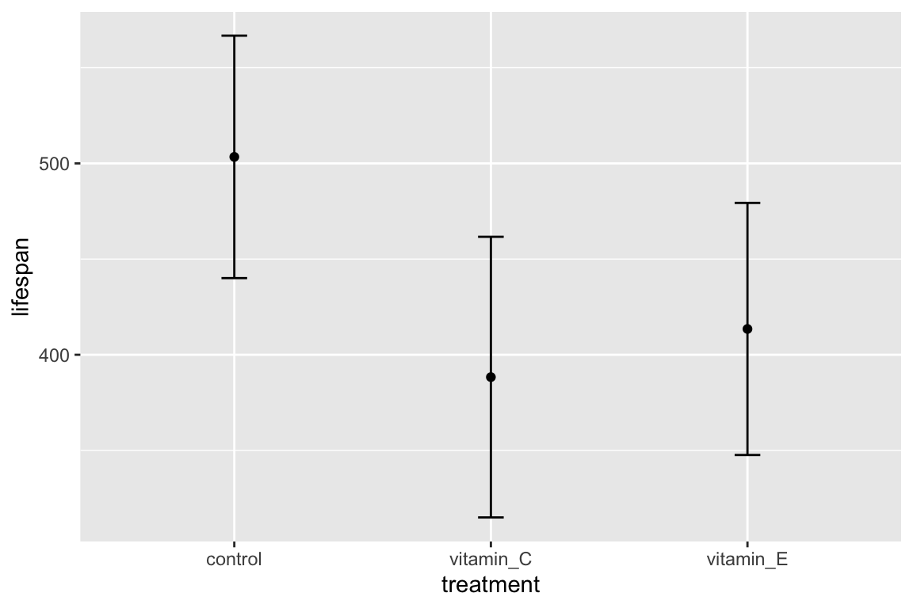
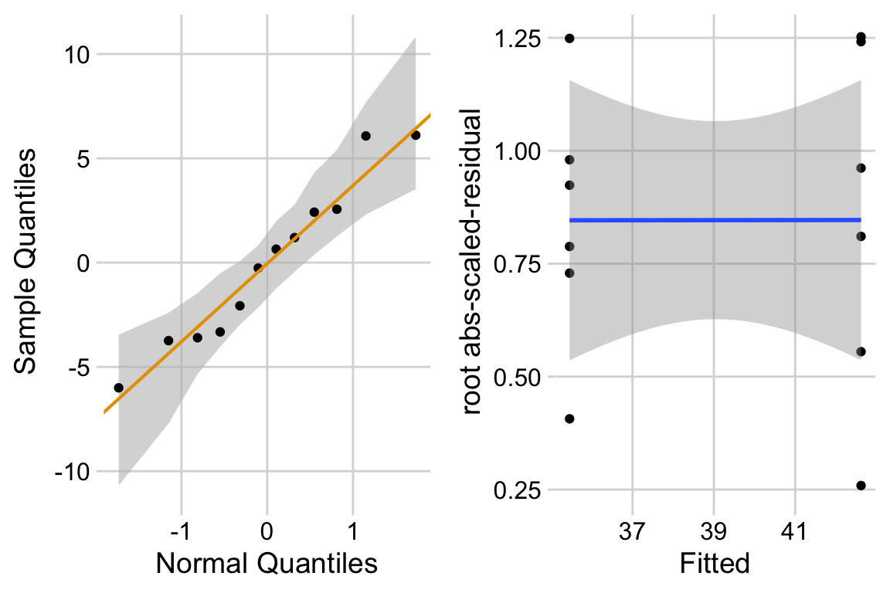
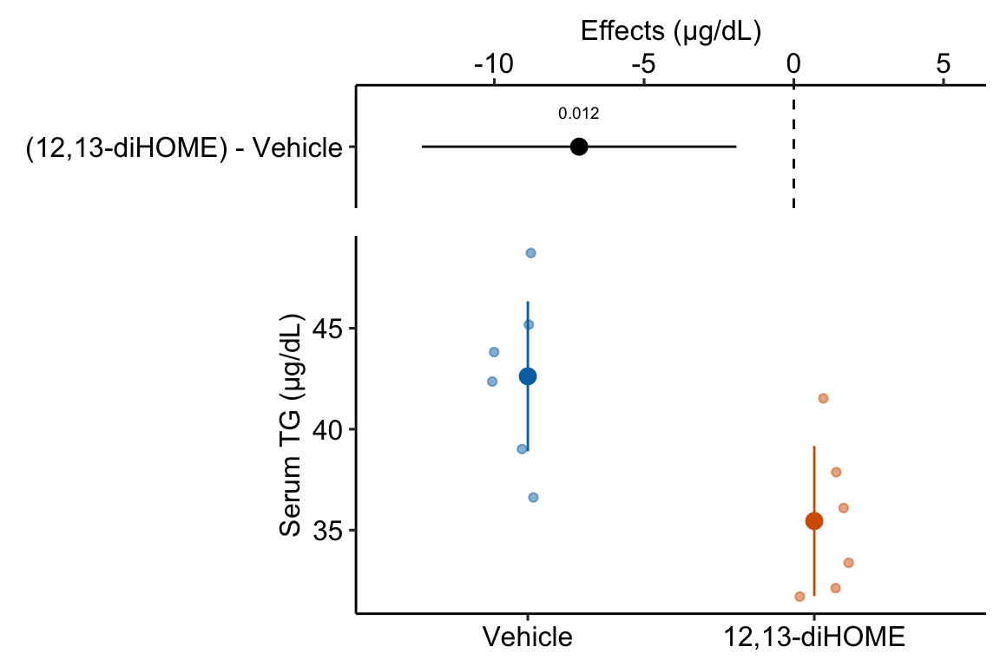
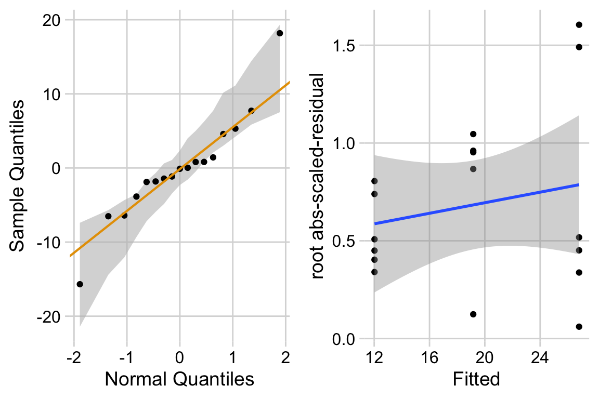
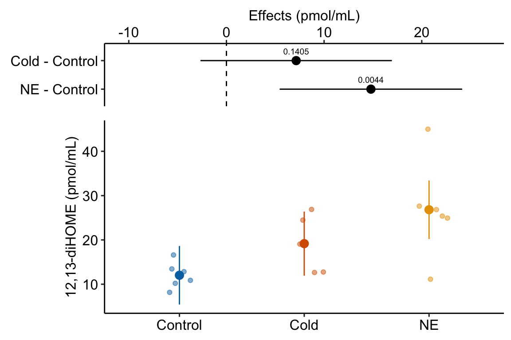

10.1 A linear model with a single factor (categorical Xvariable) estimates the effects of the levels of factor on the response
To introduce a linear model with a single factor (categorical \(X\) variable), I’ll use data from a set of experiments designed to measure the effect of the lipid 12,13-diHOME on brown adipose tissue (BAT) thermoregulation and the mechanism of this effect.
Download the source data files and move to a new folder named “The cold-induced lipokine 12,13-diHOME promotes fatty acid transport into brown adipose tissue”.
Cold temperature and the neurotransmitter/hormone norepinephrine are known to stimulate increased thermogenesis in BAT cells. In this project, the researchers probed the question “what is the pathway that mediates the effect of cold-exposure on BAT thermogenesis?”. In the “discovery” component of this project, the researchers measured plasma levels of 88 lipids with known signaling properties in humans exposed to one hour of both normal (20 °C) and cold temperature (14 °C) temperature. Of the 88 lipids, 12,13-diHOME had the largest response to the cold treatment. The researchers followed this up with experiments on mice.
10.1.1 Example 1 (fig3d) – two treatment levels (“groups”)
Let’s start with the experiment in Figure 3d, which was designed to measure the effect of 12,13-diHOME on plasma triglyceride level. If 12,13-diHOME stimulates BAT activity, then levels in the 12,13-diHOME mice should be less than levels in the control mice.
10.1.1.1 Step 1 – Understand the experiment design and the focal comparisons
Design: single, categorical X
Response variable: \(\texttt{serum_tg}\), A measure of serum triglycerides (mg/dl). \(\texttt{serum_tg}\) is a continuous variable.
Factor variable: \(\texttt{treatment}\), with levels:
- “Vehicle” – injected with saline; the negative control giving the expected response given handling and injection, but no 12,13-diHOME
- “12,13-diHOME”
Contrasts of interest
12,13-diHOME - Vehicle. Estimates the effect of 12,13-diHOME treatment. This is the focal contrast (and the only contrast).
10.1.1.2 Step 2 – import
Open the data and, if necessary, wrangle into an analyzable format. The script to import these data is in the section Hidden code below.
10.1.1.3 Step 3 – inspect the data
The second step is to examine the data to
- get a sense of sample size and balance
- check for biologically implausible outliers that suggest measurement failure, or transcription error (from a notebook, not in a cell)
- assess outliers for outlier strategy or robust analysis
- assess reasonable distributions and models for analysis.

There are no obviously implausible data points. A normal distribution model is a good, reasonable start. This can be checked more thoroughly after fitting the model.
10.1.1.5 Step 5 – check the model
set.seed(1)
# qqPlot(fig3d_m1, id=FALSE)
# spreadLevelPlot(fig3d_m1, id=FALSE)
ggcheck_the_model(fig3d_m1)
The Q-Q plot indicates that the distribution of residuals is well within that expected for a normal sample and there is no cause for concern with inference. The spread-location plot shows no conspicuous trend in how the spread changes with the conditonal mean. There is no cause for concern with inference.
Write something like this in your .Rmd file following the model check code chunk:
“The residuals are well within the range expected from sampling from a Normal distribution. The heterogeneity of the residuals is well within the range expected from sampling from a single distribution.”
10.1.1.6 Step 6 – inference
10.1.1.6.1 coefficient table
fig3d_m1_coef <- cbind(coef(summary(fig3d_m1)),
confint(fig3d_m1))
kable(fig3d_m1_coef, digits = c(1,2,1,4,1,1)) %>%
kable_styling()| Estimate | Std. Error | t value | Pr(>|t|) | 2.5 % | 97.5 % | |
|---|---|---|---|---|---|---|
| (Intercept) | 42.6 | 1.67 | 25.6 | 0.0000 | 38.9 | 46.3 |
| treatment12,13-diHOME | -7.2 | 2.36 | -3.0 | 0.0125 | -12.4 | -1.9 |
10.1.1.6.2 emmeans table
fig3d_m1_emm <- emmeans(fig3d_m1, specs = "treatment")
kable(fig3d_m1_emm, digits = c(1,1,2,0,1,1)) %>%
kable_styling()| treatment | emmean | SE | df | lower.CL | upper.CL |
|---|---|---|---|---|---|
| Vehicle | 42.6 | 1.67 | 10 | 38.9 | 46.3 |
| 12,13-diHOME | 35.5 | 1.67 | 10 | 31.7 | 39.2 |
10.1.1.6.3 contrasts table
fig3d_m1_pairs <- contrast(fig3d_m1_emm,
method = "revpairwise") %>%
summary(infer = TRUE)
kable(fig3d_m1_pairs, digits = c(1,1,1,0,1,1,2,4)) %>%
kable_styling()| contrast | estimate | SE | df | lower.CL | upper.CL | t.ratio | p.value |
|---|---|---|---|---|---|---|---|
| (12,13-diHOME) - Vehicle | -7.2 | 2.4 | 10 | -12.4 | -1.9 | -3.04 | 0.0125 |
10.1.1.7 Step 6 – plot the model
The norm in bench biology research is a response plot.
gg1 <- ggplot_the_response(
fig3d_m1,
fig3d_m1_emm,
fig3d_m1_pairs,
legend_position = "none",
y_label = "Serum TG (µg/dL)",
palette = pal_okabe_ito_blue
)
gg1
If the researchers want to explitly communicate more about the treatment effect, then they should “plot the model”.
gg2 <- ggplot_the_model(
fig3d_m1,
fig3d_m1_emm,
fig3d_m1_pairs,
legend_position = "none",
y_label = "Serum TG (µg/dL)",
effect_label = "Effects (µg/dL)",
palette = pal_okabe_ito_blue,
rel_heights = c(0.5,1)
)
gg2
10.1.1.8 Step 7 – report the model results
- Different ways of reporting the results in increasing order of not making claims that are not evidenced by the statistical analysis,
- “12,13-diHOME reduced serum TG”
- “12,13-diHOME reduced serum TG (Estimate = -7.17 µg/dL; 95% CI: -12.4, -1.9; p = 0.012)”
- “The estimated effect of 12,13-diHOME on serum TG is -7.17 µg/dL (95% CI: -12.4, -1.9, \(p = 0.012\)).”
- Don’t do this
- “12,13-diHOME significantly reduced serum TG (\(p = 0.012\))”
Why this is problematic: Significance applies to a p-value and not the effect. In English usage, “significant” means “large” or “important” and the p-value is not good evidence for either the size of an effect or the importance of an effect (see the p-value chapter). We interpret the size of effect from the estimated effect size and CI and the importance of an effect from knowledge of the physiological consequences of TG reduction over the range of the CI.
10.1.2 Understanding the analysis with two treatment levels
The variable \(\texttt{treatment}\) in the Figure 3d mouse experiment, is a single, categorical \(X\) variable. In a linear model, categorical variables are called factors. \(\texttt{treatment}\) can take two different values, “Vehicle” and “12,13-diHOME”. The different values in a factor are the factor levels (or just “levels”). “Levels” is a strange usage of this word; a less formal name for levels is “groups”. In a Nominal categorical factor, the levels have no units and are unordered, even if the variable is based on a numeric measurement. For example, I might design an experiment in which mice are randomly assigned to one of three treatments: one hour at 14 °C, one hour at 18 °C, or one hour at 26 °C. If I model this treatment as a nominal categorical factor, then I simply have three levels. While I would certainly choose to arrange these levels in a meaningful way in a plot, for the analysis itself, these levels have no units and there is no order. Ordinal categorical factors have levels that are ordered but there is no information on relative distance. The treatment at 18 °C is not more similar to 14 °C than to 26 °C. Nominal categorical factors is the default in R and how all factors are analyzed in this text.
10.1.2.1 Linear models are regression models
The linear model fit to the serum TG data is
\[\begin{align} serum\_tg &= treatment + \varepsilon\\ \varepsilon &\sim N(0, \sigma^2) \tag{10.1} \end{align}\]
This notation is potentially confusing because the variable \(\texttt{treatment}\) is a factor containing the words “Vehicle” and “12,13-diHOME” and not numbers. The linear model in (10.1) can be specified using notation for a regression model using
\[\begin{align} serum\_tg &= \beta_0 + \beta_1 treatment_{12,13-diHOME} + \varepsilon\\ \varepsilon &\sim N(0, \sigma^2) \tag{10.2} \end{align}\]
Model (10.2) is a regression model where \(treatment_{12,13-diHOME}\) is not the variable \(\texttt{treatment}\), containing the words “Vehicle” or “12,13-diHOME” but a numeric variable that indicates membership in the group “12,13-diHOME”. This variable contains the number 1 if the mouse belongs to “12,13-diHOME” and the number 0 if the mouse doesn’t belong to “12,13-diHOME”. \(treatment_{12,13-diHOME}\) is known as an indicator variable because it indicates group membership. There are several ways of coding indicator variables and the way described here is called dummy or treatment coding. Dummy-coded indicator variables are sometimes called dummy variables.
The lm function creates indicator variables under the table, in something called the model matrix.
## (Intercept) treatment12,13-diHOME
## 1 1 0
## 2 1 0
## 3 1 0
## 4 1 0
## 5 1 0
## 6 1 0
## 7 1 1
## 8 1 1
## 9 1 1
## 10 1 1
## 11 1 1
## 12 1 1The columns of the model matrix are the names of the model terms in the fit model. R names dummy variables by combining the names of the factor and the name of the level within the factor. So the \(X\) variable that R creates in the model matrix for the fit linear model in model (10.2) is \(treatment12,13-diHOME\). You can see these names as terms in the coefficient table of the fit model.
There are alternatives to dummy coding for creating indicator variables. Dummy coding is the default in R and it makes sense when thinking about experimental data with an obvious control level. I also like the interpretation of a “interaction effect” using Dummy coding. The classical coding for ANOVA is deviation effect coding, which creates coefficients that are deviations from the grand mean. In contrast to R, Deviation coding is the default in many statistical software packages including SAS, SPSS, and JMP. The method of coding can make a difference in an ANOVA table. Watch out for this – I’ve found several published papers where the researchers used the default dummy coding but interpreted the ANOVA table as if they had used deviation coding. This is both getting ahead of ourselves and somewhat moot, because I don’t advocate reporting ANOVA tables.
Recall from stats 101 that the slope of \(X\) in the model \(Y = b_0 + b_1 X\) is \(b_1 = \frac{\textrm{COV}(X,Y)}{\textrm{VAR}(X)}\). This can be generalized using the equation
\[\begin{equation} \mathbf{b} = (\mathbf{X}^\top \mathbf{X})^{-1} \mathbf{X}^\top \mathbf{y} \end{equation}\]
where \(\mathbf{X}\) is the model matrix containing a column for an intercept, columns for all indicator variables, and columns for all numeric covariates. \(\mathbf{b}\) is a vector containing the model coefficients, including the intercept in the first element. The first part of the RHS (\(\mathbf{X}^\top \mathbf{X}\)) is a matrix of the “sums of squares and cross-products” of the columns of \(\mathbf{X}\). Dividing each element of this matrix by \(N-1\) gives us the covariance matrix of the \(\mathbf{X}\), which contains the variances of the \(X\) columns along the diagonal, so this component has the role of the denominator in the stats 101 equation. Matrix algebra doesn’t do division, so the inverse of this matrix is multiplied by the second part. The second part or the RHS (\(\mathbf{X}^\top \mathbf{y}\)) is a vector containing the cross-products of each column of \(\mathbf{X}\) with \(\mathbf{y}\). Dividing each element of this vector by \(N-1\) gives us the covariances of each \(X\) with \(y\), so this component has the role of the numerator in the stats 101 equation.
Self-learning. lm fits the model y ~ X where X is the model matrix. Fit the model using the standard formula and the model using the model matrix. The coefficient table should be the same.
m1 <- lm(serum_tg ~ treatment, data = fig3d)
X <- model.matrix(~ treatment, data = fig3d)
m2 <- lm(serum_tg ~ X, data = fig3d)
coef(summary(m1))
coef(summary(m2))
10.1.2.2 The Estimates in the coefficient table are estimates of the parameters of the linear model fit to the data.
| Estimate | Std. Error | t value | Pr(>|t|) | 2.5 % | 97.5 % | |
|---|---|---|---|---|---|---|
| (Intercept) | 42.6 | 1.67 | 25.6 | 0.0000 | 38.9 | 46.3 |
| treatment12,13-diHOME | -7.2 | 2.36 | -3.0 | 0.0125 | -12.4 | -1.9 |
The row names of the coefficient table are the column names of the model matrix. These are the model terms. There are two terms (two rows) because there are two parameters in the regression model (10.2). The values in the column \(\texttt{Estimate}\) in the coefficient table are the estimates of the regression parameters \(\beta_0\) and \(\beta_1\). These estimates are the coefficients of the fit model, \(b_0\) and \(b_1\).
10.1.2.3 The coefficients of a linear model using dummy coding have a useful interpretation
| coefficient | parameter | model term | interpretation |
|---|---|---|---|
| \(b_0\) | \(\beta_0\) | (Intercept) | \(\overline{Vehicle}\) |
| \(b_1\) | \(\beta_1\) | treatment12,13-diHOME | \(\overline{12,13\;diHOME} - \overline{Vehicle}\) |
It is important to understand the interpretation of the coefficients of the fit linear model (10.1) (Table 10.1).
- The coefficient \(b_0\) is the is the conditional mean of the response for the reference level, which is “Vehicle”. Remember that a conditional mean is the mean of a group that all have the same value for one or more \(X\) variables.
- The coefficient \(b_1\) is the difference between the conditional means of the “12,13-diHOME” level and the reference (“Vehicle”) level:
\[\begin{equation} \mathrm{E}[serum\_tg|treatment = \texttt{"12,13-diHOME"}] - \mathrm{E}[serum\_tg|treatment = \texttt{"Vehicle"}] \end{equation}\]
Because there are no additional covariates in model, this difference is equal to the difference between the sample means \(\bar{Y}_{12,13-diHOME} - \bar{Y}_{Vehicle}\). The direction of this difference is important – it is non-reference level minus the reference level.
The estimate \(b_1\) is the effect that we are interested in. Specifically, it is the measured effect of 12,13-diHOME on serum TG. When we inject 12,13-diHOME, we find the mean serum TG decreased by -7.2 µg/dL relative to the mean serum TG in the mice that were injected with saline. Importantly, the reference level is not a property of an experiment but is set by whomever is analyzing the data. Since the non-reference estimates are differences in means, it often makes sense to set the “control” treatment level as the reference level.
Many beginners mistakenly memorize the coefficient \(b_1\) to equal the mean of the non-reference group (“12,13-diHOME”). Don’t do this. In a regression model, only \(b_0\) is a mean. The coefficient \(b_1\) in model (10.2) is a difference in means.
Figure 10.1: What the coefficients of a linear model with a single categorical X mean. The means of the two treatment levels for the serum TG data are shown with the large, filled circles and the dashed lines. The intercept (\(b_0\)) is the mean of the reference treatment level (“Vehicle”). The coefficient \(b_1\) is the difference between the treatment level’s mean and the reference mean. As with a linear model with a continuous \(X\), the coefficient \(b_1\) is an effect.
A geometric interpretation of the coefficients is illustrated in Figure 10.1. \(b_0\) is the conditional mean of the reference level (“Vehicle”) and is an estimate of \(\beta_0\), the true, conditional mean of the population. \(b_1\) is the difference in the conditional means of the first non-reference level (“12,13-diHOME”) and the reference level (“Vehicle”) and is an estimate of \(\beta_1\), the true difference in the conditional means of the population with and without the treatment 12,13-diHOME.
tl;dr. What is a population? In the experimental biology examples in this text, we might consider the population as a very idealized, infinitely large set of mice, or fish, or fruit flies, or communities from which our sample is a reasonably representative subset. For the experiments in the 12,13-diHOME study, the population might be conceived of as the hypothetical, infinitely large set of 12-week-old, male, C57BL/6J mice, raised in the mouse facility at Joslin Diabetes Center. An even more abstract way to way to think about what the population could be is the infinitely large set of values that could generated by the linear model.
10.1.2.4 Better know the coefficient table
| Estimate | Std. Error | t value | Pr(>|t|) | 2.5 % | 97.5 % | |
|---|---|---|---|---|---|---|
| (Intercept) | 42.6 | 1.67 | 25.6 | 0.0000 | 38.9 | 46.3 |
| treatment12,13-diHOME | -7.2 | 2.36 | -3.0 | 0.0125 | -12.4 | -1.9 |
- The \(\texttt{(Intercept)}\) row contains the statistics for \(b_0\) (the estimate of \(\beta_0\)). Remember that \(b_0\) is the conditional mean of the reference treatment (“Vehicle”).
- The \(\texttt{treatment12,13-diHOME}\) row contains the statistics for \(b_1\) (the estimate of \(\beta_1\)). Remember that \(b_1\) is the difference in conditional means of the groups “12,13-diHOME” and “Vehicle”.
- The column \(\texttt{Estimate}\) contains the model coefficients, which are estimates of the parameters.
- The column \(\texttt{Std. Error}\) contains the model SEs of the coefficients. The SE of \(\texttt{(Intercept)}\) is a standard error of a mean (SEM). The SE of \(\texttt{treatment12,13-diHOME}\) is a standard error of a difference (SED).
- The column \(\texttt{t value}\) contains the test statistic of the coefficients. This value is the ratio \(\frac{Estimate}{SE}\). For this model, we are only interested in the test statistic for \(b_1\). Effectively, we will never be interested in the test statistic for \(b_0\) because the mean of a group will never be zero.
- The column \(\texttt{Pr(>|t|)}\) contains the p-values for the test statistic of the coefficients. For this model, and all models in this text, we are only interested in the p-value for the non-intercept coefficients.
- The columns \(\texttt{2.5 %}\) and \(\texttt{97.5 %}\) contain the lower and upper limits of the 95% confidence interval of the estimate.
10.1.2.5 The emmeans table is a table of modeled means and inferential statistics
| treatment | emmean | SE | df | lower.CL | upper.CL |
|---|---|---|---|---|---|
| Vehicle | 42.6 | 1.67 | 10 | 38.9 | 46.3 |
| 12,13-diHOME | 35.5 | 1.67 | 10 | 31.7 | 39.2 |
The table of marginal means for the model fit to the fig3d serum TG data (Model (10.1)) is given in Table @ref(tab:fig3d_m1_emm_kable). The table of marginal means gives the **modeled* mean, standard error and confidence interval for all specified groups. There is no test-statistic with a p-value because there is no significance test. In this text, I’ll refer to this table as the “emmeans table”, since it is the output from the emmeans function (“em” is the abbreviation for “estimated marginal”). I’ll use “modeled means” to refer to the means themselves as these are the estimate of means from a fit linear model.
A marginal mean is the mean over a set of conditional means. For example, if a treatment factor has three levels, the conditional means are the means for each level and the marginal mean is the mean of the three means. Or, if the conditional means are the expected values given a continous covariate, the marginal mean is the expected value at the mean of covariate. The specified emmeans table of the fig3d data is not too exciting because it simply contains the conditional means – the values are not marginalized over any \(X\). Because the emmeans table contains different sorts of means (conditional, marginal, adjusted), this text will generally refer to the means in this table as “modeled means”.
| treatment | emmean | SE | df | lower.CL | upper.CL |
|---|---|---|---|---|---|
| Vehicle | 42.62004 | 1.66723 | 10 | 38.90523 | 46.33485 |
| 12,13-diHOME | 35.45233 | 1.66723 | 10 | 31.73752 | 39.16714 |
| treatment | mean | SE | lower.CL | upper.CL |
|---|---|---|---|---|
| Vehicle | 42.62004 | 1.77325 | 38.66899 | 46.57109 |
| 12,13-diHOME | 35.45233 | 1.55398 | 31.98984 | 38.91482 |
- The means in the emmeans table are modeled means. Here, and for many linear models, these will be equal to the sampled means. This will not be the case in models with one or more continuous covariates, or if marginal means are explicitly specified.
- Unlike the modeled means, the modeled standard errors and confidence intervals will, effectively, never equal sample standard errors and confidence intervals. In many models, plots using sample statistics can lead to very deceiving inference of differences between groups. This is why this text advocates plotting the model – using modeled means and confidence intervals in plots.
It is exceptionally important to understand the difference between the means, SEs, and CIs in the emmeans table and the statistics of the same name in a summary table of the data.
- The statistics in a summary table are sampled means, SEs, and CIs – these statistics are computed for the group using only the data in the group.
- To understand modeled SEs and CIs, recall that the standard error of a sample mean is \(\frac{s}{\sqrt{n}}\), where \(s\) is the sample standard deviation and \(n\) is the sample size in the group. The computation of the SE in the emmeans table uses the same equation, except the numerator is not the sample standard deviation of the group but the model standard deviation, which is an estimate of the true standard deviation \(\sigma\). As with the sample SE, the denominator for the modeled SE is the sample size \(n\) for the group. Since the numerator of the modeled SE is the same for all groups, the modeled SE will be the same in all groups that have the same sample size, as seen in the marginal means table for the model fit to the Figure 3d data. This is not true for sampled SEs, since sampled standard deviations will always differ.
It may seem odd to use a common standard deviation in the computation of the modeled SEs. It is not. Remember that an assumption of the linear model is homogeneity of variances – that all residuals \(e_i\) are drawn from the same distribution (\(N(0, \sigma^2)\)) (a “single hat”) regardless of group. The model standard deviation \(\hat{\sigma}\) is the estimate of the square root of the variance of this distribution. Given this interpretation, it is useful to think of each sample standard deviation as an estimate of \(\sigma\) (the linear model assumes that all differences among the sample standard deviations are due entirely to sampling). The model standard deviation is a more precise estimate of \(\sigma\) since it is computed from a larger sample (all \(N\) residuals).
The model standard deviation is called the “pooled” standard deviation in the ANOVA literature and is computed as a sample-size weighted average of the sample standard deviations.
The modeled standard error of the mean uses the estimate of \(\sigma\) from the fit model. This estimate is
\[\begin{equation} \hat{\sigma} = \sqrt{\frac{\sum{(y_i - \hat{y}_i)^2}}{df}} \end{equation}\]
Create a code chunk that computes this. Recall that \((y_i - \hat{y}_i)\) is the set of residuals from the model, which can be extracted using residuals(fit) where “fit” is the fit model object. \(df\) is the model degrees of freedom, which is \(N-k\), where \(N\) is the total sample size and \(k\) is the number of parameters that are fit. This makes sense – for the sample variance there is one parameter that is fit, the mean of the group. In model fig3d_m1, there are two parameters that are fit, the intercept and the coefficient of treatment12,13-diHOME.
10.1.2.6 Estimates of the effects are in the contrasts table
| contrast | estimate | SE | df | lower.CL | upper.CL | t.ratio | p.value |
|---|---|---|---|---|---|---|---|
| (12,13-diHOME) - Vehicle | -7.2 | 2.36 | 10 | -12.4 | -1.9 | -3 | 0.012 |
- This table is important for reporting treatment effects and CIs and for plotting the model. A contrast is a difference in means. With only two treatment levels, the table of contrasts doesn’t give any more information than the coefficient table – the single contrast is the coefficient \(b_1\) in the coefficient table. Nevertheless, I advocate computing this table to stay consistent and because the script (or function) to plot the model uses this table and not the coefficient table.
- The value in the column \(\texttt{Estimate}\) is the mean of the non-reference group (“12,13-diHOME”) minus the mean of the reference group (“Vehicle”).
- The value in the “SE” column is the standard error of the difference (SED), specifically the difference in the estimate column. This SE is computed using the model standard deviation \(\sigma\).
- The values in the “lower.CL” and “upper.CL” columns are the bounds of the 95% confidence interval of the estimate. Remember (from Chapter ??) to think of this interval as containing potential values of the true parameter (the true difference in means between the two groups) that are reasonably compatible with the data. Don’t think of the interval as having 95% probability of containing the true effect. Remember that a confidence interval applies to the procedure and not a parameter – 95% of the CIs from hypothetical, replicate experiments that meet all the assumptions used to compute the CI will include the true effect.
- The columns “t.ratio” and “p.value” contains the t and p values of the significance (not hypothesis!) test of the estimate. The t-statistic is the ratio of the estimate to the SE of the estimate (use the console to confirm this given the values in the table). It is a signal (the estimate) to noise (SE of the estimate) ratio. The p-value is the probability of sampling from normal distribution with the observed standard deviation, randomly assigning the sampled values to either “Vehicle” or “12,13-diHOME”, fitting the linear model, and observing a t-value as or more extreme than the observed t. A very small p-value is consistent with the experiment “not sampling from distributions with the same mean” – meaning that adding a treatment affects the mean of the distribution. This is the logic used to infer a treatment effect. Unfortunately, it is also consistent with the experiment not approximating other conditions of the model, including non-random assignment, non-independence, non-normal conditional responses, and variance heterogeneity. It is up to the rigorous researcher to be sure that these other model conditions are approximated or “good enough” to use the p-value to infer a treatment effect on the mean.
10.1.2.7 t and p from the contrasts table – when there are only two levels in \(X\) – are the same as t and p from a t-test
Compare
coefficient table:
| Estimate | Std. Error | t value | Pr(>|t|) | |
|---|---|---|---|---|
| (Intercept) | 42.62004 | 1.667226 | 25.563447 | 0.000000 |
| treatment12,13-diHOME | -7.16771 | 2.357813 | -3.039982 | 0.012463 |
contrast table:
emmeans(m1, specs = "treatment") %>%
contrast(method = "revpairwise") %>%
kable() %>%
kable_styling()| contrast | estimate | SE | df | t.ratio | p.value |
|---|---|---|---|---|---|
| (12,13-diHOME) - Vehicle | -7.16771 | 2.357813 | 10 | -3.039982 | 0.012463 |
t-test:
m2 <- t.test(fig3d[treatment == "12,13-diHOME", serum_tg],
fig3d[treatment == "Vehicle", serum_tg],
var.equal = TRUE)
glance(m2) %>% # glance is from the broom package
kable() %>%
kable_styling()| estimate | estimate1 | estimate2 | statistic | p.value | parameter | conf.low | conf.high | method | alternative |
|---|---|---|---|---|---|---|---|---|---|
| -7.16771 | 35.45233 | 42.62004 | -3.039982 | 0.012463 | 10 | -12.42125 | -1.914175 | Two Sample t-test | two.sided |
Notes
- The default
t.testin R is the Welch t-test for heterogenous variance. To compute the Student t-test, usevar.equal = TRUE. - The “statistic” in the t-test output contains the t-value of the t-test. It is precisely the same as the t-statistic in the coefficient table and the contrast table.
- The p-values in all three tables are precisely the same.
The t and p values for the t-test are the same as those for the linear model, because the t-test is a specific case of the linear model. Reasons to abandon classic t-tests and learn the linear modeling strategy include
- A linear modeling strategy encourages researchers to think about the effect and uncertainty in the effect and not just a p-value.
- The linear model is nearly infinitely flexible and expandible while the t-test is limited to a few variations.
There is rarely a reason to ever use the t.test() function. Throw the function away. Ignore web pages that teach you to use it. The t-test is easy to learn, which encourages its overuse. If your only tool is a t-test, every problem looks like a comparison between two-means.
10.1.3 Example 2 – three treatment levels (“groups”)
10.1.3.1 Understand the experiment design
The data come from the experiment reported in Figure 2a of the 12,13-diHOME article described above. This experiment was designed to probe the hypothesis that 12,13-diHOME is a mediator of known stimulators of increased BAT activity (exposure to cold temperature and sympathetic nervous system activation). Mice were assigned to control (30 °C), one-hour exposure to 4 °C, or 30 minute norepinephrine (NE) treatment level (NE is the neurotransmitter of the sympathetic neurons targeting peripheral tissues).
design: single, categorical X with three levels.
response variable: \(\texttt{diHOME}\), the serum concentration of 12,13-diHOME. a continuous variable.
factor variable: \(\texttt{treatment}\), with levels:
- “Control” – the negative control. We expect diHOME to be low relative to the two treated conditions.
- “Cold” – focal treatment 1. Given the working model of 12,13-diHome as a mediator between stimulation and BAT, this response should be relatively high compared to Control. In the archived data, this group is “1 hour cold”.
- “NE” – focal treatment 2. Given the working model of 12,13-diHome as a mediator between stimulation and BAT, this response should be relatively high compared to Control. In the archived data, this group is “30 min NE”.
planned contrasts
- Cold - Control – If diHOME is a mediator of cold, then difference should be positive.
- NE - Control – If diHOME is a mediator of NE, then difference should be positive.
The contrast Cold - NE is not of interest.
10.1.3.3 check the model

The Q-Q plot indicates that the distribution of residuals is within that expected for a normal sample. The spread-location plot shows no conspicuous trend in how the spread changes with the conditonal mean. There is little cause for concern with inference from a linear model.
Write something like this in your .Rmd file following the model check code chunk:
“The residuals are within the range expected from sampling from a Normal distribution. The heterogeneity of the residuals is well within the range expected from sampling from a single distribution.”
10.1.3.4 Inference from the model
10.1.3.4.1 coefficient table
fig2a_m1_coef <- cbind(coef(summary(fig2a_m1)),
confint(fig2a_m1))
fig2a_m1_coef %>%
kable(digits = c(1,2,1,4,1,1)) %>%
kable_styling()| Estimate | Std. Error | t value | Pr(>|t|) | 2.5 % | 97.5 % | |
|---|---|---|---|---|---|---|
| (Intercept) | 12.0 | 3.08 | 3.9 | 0.0016 | 5.4 | 18.6 |
| treatmentCold | 7.1 | 4.57 | 1.6 | 0.1405 | -2.7 | 16.9 |
| treatmentNE | 14.8 | 4.36 | 3.4 | 0.0044 | 5.4 | 24.1 |
10.1.3.4.2 emmeans table
fig2a_m1_emm <- emmeans(fig2a_m1, specs = "treatment")
fig2a_m1_emm %>%
kable(digits = c(1,1,2,0,1,1)) %>%
kable_styling()| treatment | emmean | SE | df | lower.CL | upper.CL |
|---|---|---|---|---|---|
| Control | 12.0 | 3.08 | 14 | 5.4 | 18.6 |
| Cold | 19.2 | 3.38 | 14 | 11.9 | 26.4 |
| NE | 26.8 | 3.08 | 14 | 20.2 | 33.4 |
10.1.3.4.3 contrasts table
fig2a_m1_planned <- contrast(fig2a_m1_emm,
method = "trt.vs.ctrl",
adjust = "none",
level = 0.95) %>%
summary(infer = TRUE)
fig2a_m1_planned %>%
kable(digits = c(1,1,1,0,1,1,2,4)) %>%
kable_styling()| contrast | estimate | SE | df | lower.CL | upper.CL | t.ratio | p.value |
|---|---|---|---|---|---|---|---|
| Cold - Control | 7.1 | 4.6 | 14 | -2.7 | 16.9 | 1.56 | 0.1405 |
| NE - Control | 14.8 | 4.4 | 14 | 5.4 | 24.1 | 3.40 | 0.0044 |
10.1.3.5 plot the model
ggplot_the_model(
fig2a_m1,
fig2a_m1_emm,
fig2a_m1_planned,
legend_position = "none",
y_label = "12,13-diHOME (pmol/mL)",
effect_label = "Effects (pmol/mL)",
palette = pal_okabe_ito_blue,
rel_heights = c(0.5,1)
)
10.1.3.6 Report the model results
- Different ways of reporting the results in increasing order of making claims that are evidenced by the statistical analysis,
- “NE exposure increased 12,13-diHOME but the effect of cold exposure on 12,13-diHOME is not clear”.
- “The estimated effect of NE exposure is consistent with a NE-induced increase in 12,13-diHOME while the estimated effect of cold exposure is less clear”.
- “The estimated effect of NE exposure is consistent with a NE-induced increase in 12,13-diHOME (Estimate = 14.8 pmol/mL; 95% CI: 5.4, 24.1; \(p = 0.004\)) while the estimated effect of cold exposure is less clear (Estimate = 7.1 pmol/mL; 95% CI: -2.7, 16.9; \(p = 0.14\))”.
The first statement makes the definitive claim that NE causes the increase but there is not unreasonable probability of this magnitude of effect occurring by random sampling. In addition the experiment could be infected by experiment implementation decisions that make this p-value unreliable. The second statement makes a tentative claim. The third statement adds the statistics that provide the evidence for the tentative claim. The statistics could be moved to some combination of the figure, the figure caption, and a supplement.
- Don’t do this
- NE exposures significantly increased 12,13-diHOME (\(p = 0.004\))”
- There is no effect of cold exposure on 12,13-diHOME (\(p = 0.14\))”
Why the first statement is problematic: Significance applies to a p-value and not the effect. In English usage, “significant” means “large” or “important” and the p-value is not good evidence for either the size of an effect or the importance of an effect (see the p-value chapter). We interpret the size of effect from the estimated effect size and CI and the importance of an effect from knowledge of the physiological consequences of TG reduction over the range of the CI.
Why the second statement is problematic: p > 0.05, or a high p-value more generally, is not evidence of no effect because a p-value (or 1 - p) does not give the probability that a treatment effect is zero. One could use an equivalence test to give [the probability that an effect is less than some physiologically meaningful magnitude][https://journals.sagepub.com/doi/abs/10.1177/1948550617697177]
10.1.4 Understanding the analysis with three (or more) treatment levels
10.1.4.1 Better know the coefficient table
The fit regression model for the data in Figure 2a is
\[\begin{equation} diHOME_i = b_0 + b_1 treatment_{Cold,i} + b_2 treatment_{NE,i} + e_i \tag{10.3} \end{equation}\]
The coefficients of the model are in the \(\texttt{Estimate}\) column of the coefficient table.
| Estimate | Std. Error | t value | Pr(>|t|) | 2.5 % | 97.5 % | |
|---|---|---|---|---|---|---|
| (Intercept) | 12.0 | 3.1 | 3.9 | 0 | 5.4 | 18.6 |
| treatmentCold | 7.1 | 4.6 | 1.6 | 0 | -2.7 | 16.9 |
| treatmentNE | 14.8 | 4.4 | 3.4 | 0 | 5.4 | 24.1 |
- The \(\texttt{(Intercept)}\) row contains the statistics for \(b_0\) (the estimate of \(\beta_0\)). Here, \(b_0\) is the mean of the reference group, which is “Control”.
- The \(\texttt{treatmentCold}\) row contains the statistics for \(b_1\) (the estimate of \(\beta_1\)). Here, \(b_1\) is the difference \(\mathrm{E}[diHOME|treatment = \texttt{"Cold"}] - \mathrm{E}[diHOME|treatment = \texttt{"Control"}]\). This difference in conditional means is equal to the difference in the sample means of the two groups for this model because there are no additional covariates in the model.
- The \(\texttt{treatmentNE}\) row contains the statistics for \(b_2\) (the estimate of \(\beta_2\)). Here, \(b_2\) is the difference \(\mathrm{E}[diHOME|treatment = \texttt{"NE"}] - \mathrm{E}[diHOME|treatment = \texttt{"Control"}]\). Do not make the mistake in thinking that the value in \(\texttt{Estimate}\) is the mean of the “NE” group.
- The number of non-intercept coefficients generalizes to any number of levels of the factor variable. If there are \(k\) levels of the factor, there are \(k-1\) indicator variables, each with its own coefficient (\(b_1\) through \(b_{k-1}\)) estimating the effect of that treatment level relative to the control (if using dummy coding).
Again – Do not make the mistake in thinking that the values in \(\texttt{Estimate}\) for the \(\texttt{treatmentCold}\) and \(\texttt{treatmentNE}\) rows are the means of the “Cold” and “NE” groups. These coefficients are differences in means. And, to emphasize further understanding of these coefficients, both \(b_1\) and \(b_2\) are “slopes”. Don’t visualize this as a single line from the control mean through both non-control means. Slopes is plural – there are two regression lines. \(b_1\) is the slope of the line from the control mean to the “Cold” mean while \(b_2\) is the slope of the line from the control mean to the “NE” mean. The numerator of each slope is the difference between that group’s mean and the control mean. The denominator of each slope is 1 (because each has the value 1 when the row is assigned to that group).
Two understand the names of the model terms, it’s useful to recall the order of the factor levels of \(\texttt{treatment}\), which is
## [1] "Control" "Cold" "NE"Given this ordering, the lm function creates a regression model with an intercept column for the “Control” group (because the first group in the list is the reference level), an indicator variable for the “Cold” group called treatmentCold, and an indicator variable for the “NE” group called treatmentNE. We can see these model names by peeking at the model matrix of the fit model
## (Intercept) treatmentCold treatmentNE
## 1 1 0 0
## 2 1 1 0
## 3 1 0 1
## 4 1 0 0
## 5 1 1 0
## 6 1 0 1The column \(\texttt{treatmentCold}\) is a dummy-coded indicator variable containing the number 1, if the individual is in the “Cold” group, or the number 0, otherwise. The column \(\texttt{treatmentNE}\) is a dummy-coded indicator variable containing the number 1, if the individual is in the “NE” group, or the number 0, otherwise.
The model coefficients, parameters, model term, and interpretation are summarized in the following table.
| coefficient | parameter | model term | interpretation |
|---|---|---|---|
| \(b_0\) | \(\beta_0\) | (Intercept) | \(\overline{Control}\) |
| \(b_1\) | \(\beta_1\) | treatmentCold | \(\overline{1\;hour\;cold} - \overline{Control}\) |
| \(b_2\) | \(\beta_2\) | treatmentNE | \(\overline{30\;min\;NE} - \overline{Control}\) |
10.1.4.2 The emmeans table
| treatment | emmean | SE | df | lower.CL | upper.CL |
|---|---|---|---|---|---|
| Control | 12.0 | 3.08 | 14 | 5.4 | 18.6 |
| Cold | 19.2 | 3.38 | 14 | 11.9 | 26.4 |
| NE | 26.8 | 3.08 | 14 | 20.2 | 33.4 |
This table is important for reporting means and CIs and for plotting the model. As in example 1, the modeled means in the column “emmean” are the sample means of each group (what you would compute if you simply computed the mean for that group). Again, this is true for this model, but is not generally true.
And again, as in example 1, the SE for each mean is not the sample SE but the modeled SE – the numerator is the estimate of \(\sigma\) from the fit model, which includes residuals from all groups combined. These are the SEs that you should report because it is these SEs that are used to compute the p-value and CI that you report, that is, they tell the same “story”. The SE for the “Cold” group is a bit higher because the sample size \(n\) for this group is smaller by 1.
10.1.4.3 The contrasts table
| contrast | estimate | SE | df | lower.CL | upper.CL | t.ratio | p.value |
|---|---|---|---|---|---|---|---|
| Cold - Control | 7.1 | 4.57 | 14 | -2.7 | 16.9 | 1.6 | 0.1405 |
| NE - Control | 14.8 | 4.36 | 14 | 5.4 | 24.1 | 3.4 | 0.0044 |
- This table is important for reporting treatment effects and CIs and for plotting the model. A contrast is a difference in means.
- The contrast table here has no more information than is in the coefficient table, but that is not generally true for models with treatment factors with more than two groups. In “Working in R” below, I show how to compute a contrast table with all pairwise comparisons (contrasts between all possible pairings of the groups)
- The column \(\texttt{Contrast}\) contains the names of the contrasts. Note that the name gives the direction of the difference.
- The values in the column \(\texttt{estimate}\) are the contrasts. These are the differences in the conditional means of the groups identified in the \(\texttt{Contrast}\) column. These are the effects that we are interested in.
- The value in the “SE” column is the standard error of the difference (SED) of each contrast. This SE is computed using the model standard deviation \(\sigma\).
- The values in the “lower.CL” and “upper.CL” columns are the bounds of the 95% confidence interval of the estimate. Remember (from Chapter ??) to think of this interval as containing potential values of the true parameter (the true difference in means between the two groups) that are reasonably compatible with the data. Don’t think of the interval as having 95% probability of containing the true effect. Remember that a confidence interval applies to the procedure and not a parameter – 95% of the CIs from hypothetical, replicate experiments that meet all the assumptions used to compute the CI will include the true effect.
- The columns “t.ratio” and “p.value” contains the t and p values of the significance (not hypothesis!) test of the estimate. The t-statistic is the ratio of the estimate to the SE of the estimate (use the console to confirm this given the values in the table). It is a signal (the estimate) to noise (SE of the estimate) ratio. The p-value is the probability of sampling from normal distribution with the observed standard deviation, randomly assigning the sampled values to the three groups (using the original sample sizes for each), fitting the linear model, and observing a t-value as or more extreme than the observed t. A very small p-value is consistent with the experiment “not sampling from distributions with the same mean” – meaning that adding a treatment affects the mean of the distribution. This is the logic used to infer a treatment effect. Unfortunately, it is also consistent with the experiment not approximating other conditions of the model, including non-random assignment, non-independence, non-normal conditional responses, and variance heterogeneity. It is up to the rigorous researcher to be sure that these other model conditions are approximated or “good enough” to use the p-value to infer a treatment effect on the mean.
10.1.4.4 t and p from the contrasts table – when there are more than two levels in \(X\) – are not the same as those from pairwise t-tests among pairs of groups
fig2a_m1_pairs <- contrast(fig2a_m1_emm,
method = "revpairwise",
adjust = "none") %>%
summary(infer = TRUE)The chunk above computes a contrast table that includes comparisons of all pairs of groups in the factor \(\texttt{treatment}\) (this adds a 3rd comparison to the contrast table of planned comparisons above). The t-tests for the contrasts are derived from a single fit linear model.
In contrast to the analysis in the chunk above, researchers commonly fit separate t-tests for each pair of treatment levels.
# classic t-test
test1 <- t.test(fig2a[treatment == "Cold", diHOME],
fig2a[treatment == "Control", diHOME],
var.equal = TRUE)
test2 <- t.test(fig2a[treatment == "NE", diHOME],
fig2a[treatment == "Control", diHOME],
var.equal = TRUE)
test3 <- t.test(fig2a[treatment == "NE", diHOME],
fig2a[treatment == "Cold", diHOME],
var.equal = TRUE)Notes
- Again, the default t.test in R is the Welch t-test for heterogenous variance. To compute the Student t-test, use
var.equal = TRUE - To see the full
t.testoutput, type “test1” into the console.
Compare the t and p values from the three independent tests with the t and p-values from the single linear model.
| contrast | t (lm) | p (lm) | t (t-test) | p (t-test) |
|---|---|---|---|---|
| Cold - Control | 1.562324 | 0.1405278 | 2.415122 | 0.0389207 |
| NE - Cold | 1.674696 | 0.1161773 | 1.380666 | 0.2007006 |
| NE - Control | 3.395015 | 0.0043559 | 3.238158 | 0.0088971 |
The t and p-values computed from three separate tests differ from the t and p-values computed from the single linear model shown in the contrasts table above. The values differ because the SE in the denominators used to compute the \(t\)-values differ. The linear model uses the same value of \(\sigma\) to compute the SED (the denominator of t) for all three t-tests in the contrast table. Each separate t-test uses a different value of \(\sigma\) to compute the SED. Which is correct? Neither – they simply make different assumptions about the data generating model.
- Most importantly, never do both methods, look at the p-values, and then convince yourself that the method with the p-values that match your hypothesis is the correct method. Human brains are very, very good at doing this. This is called p-hacking. When you p-hack, the interpretation of the p-value is effectively meaningless. P-hacking leads to irreproducible science.
- In general, using the linear model is a better practice than the separate t-tests. The reason is the homogeneity of variance assumption. If we assume homogeneity of variances, then we can think of the sample standard deviation of all three groups as an estimate of \(\sigma\). In the linear model, we use three groups to estimate \(\sigma\) but in each separate t-test, we use only two groups. Consequently, our estimate of \(\sigma\) in the linear model is more precise than that in the t-tests. While the difference can be large with any individual data set (it’s pretty big with the fig2a data), the long-run advantage of using the linear model instead of separate t-tests is pretty small, especially with only three groups (the precision increases with more groups).
- We can drop the homogeneity of variance assumption with either the linear model or the three, separate t-tests. This is outlined below in “Heterogeneity of variance”. In this case, the t and p-values for the three comparisons are the same. Still, the linear model (that models heterogenity) is better practice than the separate t-tests because the linear model is much more flexible and expandable.
10.1.4.5 The contrasts table – when there are more than two levels in \(X\) – has multiple p-values. How to handle this “multiple testing” is highly controversial
Multiple testing is the practice of adjusting p-values and confidence intervals to account for the expected increase in the frequency of Type I error in a batch, or family, of tests. Multiple testing is a concept that exists because of Neyman-Pearson hypothesis testing strategy. If multiple tests are used to answer the same question then, these are in the same family. Issues surrounding multiple testing are fleshed out in more detail in Chapter xxx “Best Practices”. Computing adjusted values is covered below in the “Working in R” section.